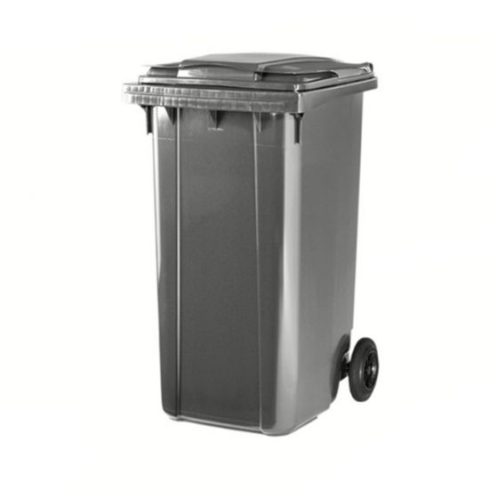
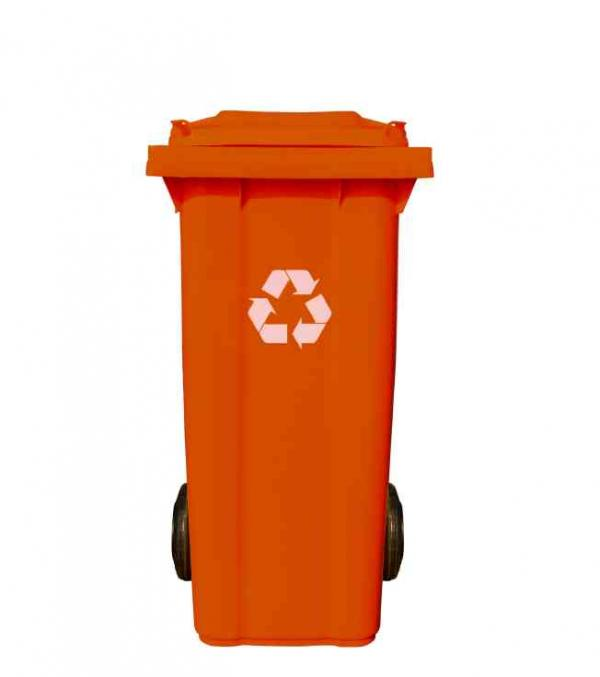
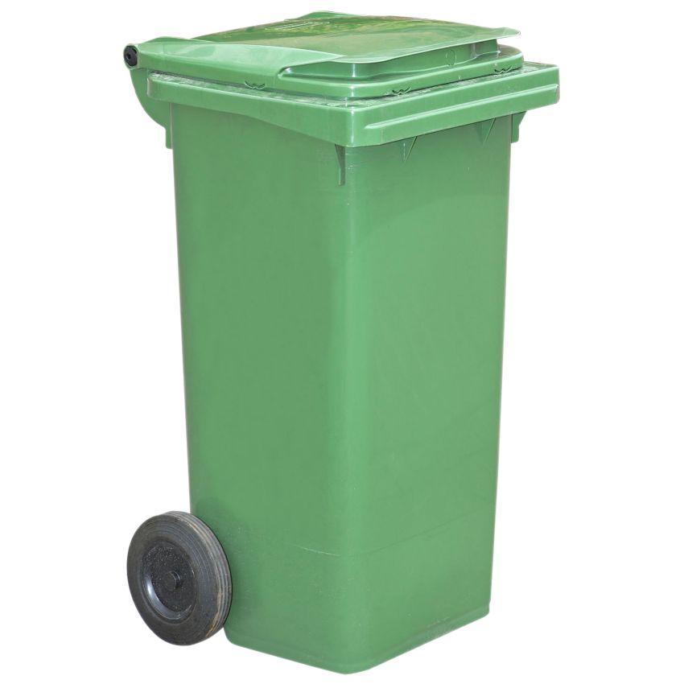
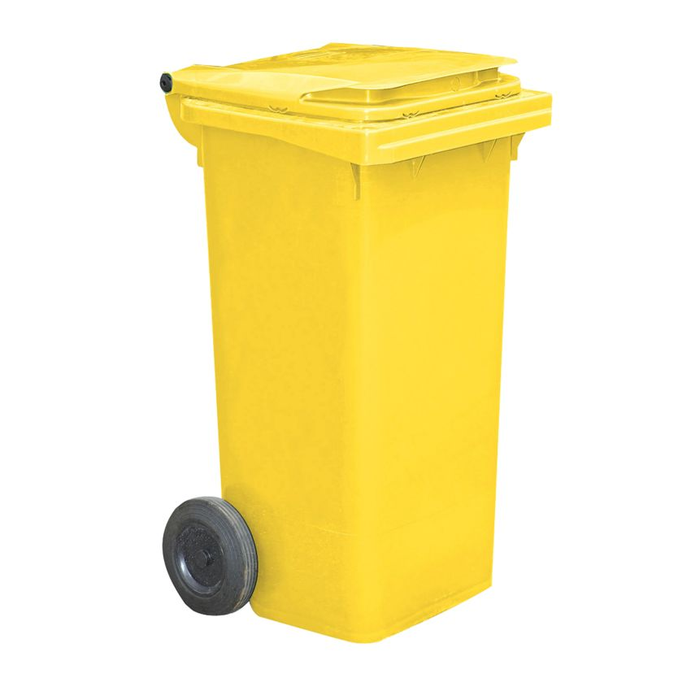
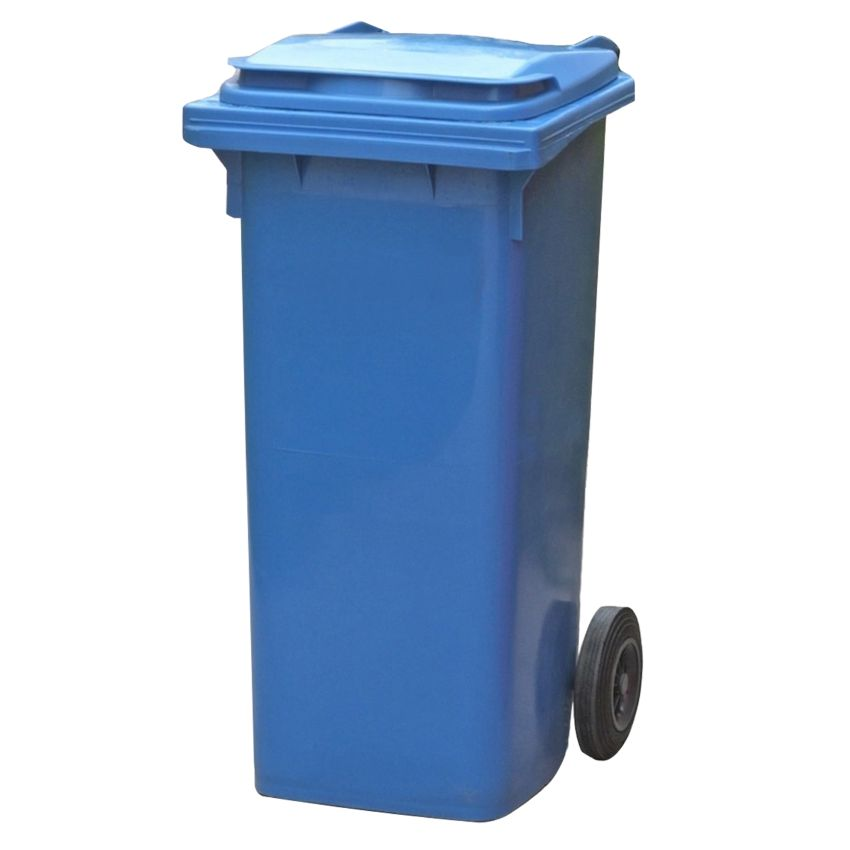
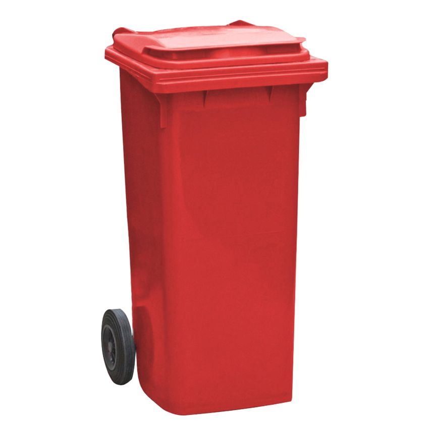

Actualmente existen múltiples cubos de basura que facilitan el reciclaje.
Entre ellos encontramos los cubos de color gris, naranja, verde, amarillo, azul y rojo.
Probablemente te hayas encontrado en una situación de incertidumbre y duda acerca del lugar donde se debería tirar un producto específico,
por eso hemos creado este apartado para explicarte dónde se deben tirar los diferentes productos.

CUBO GRIS
Deshechos generales.

CUBO NARANJA
Órganico.

CUBO VERDE
Vidrio.

CUBO AMARILLO
Plástoicos y envases.

CUBO AZUL
Papel.

CUBO ROJO
Materiales utilizados en hospitales.
Puntos limpios
Hay algunos cubos que no podemos encontrar en casa, pero para eso están los puntos limpios. Estos son
instalaciones en las que se recogen deshechos que no se pueden tirar a un contenedor de los mencionados anteriormente.
El acceso a estos puntos es totalmente gratuito.